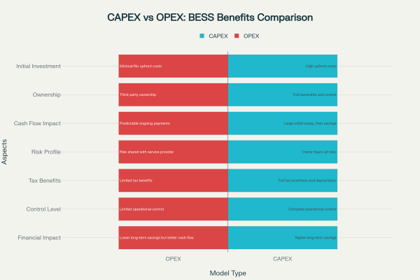
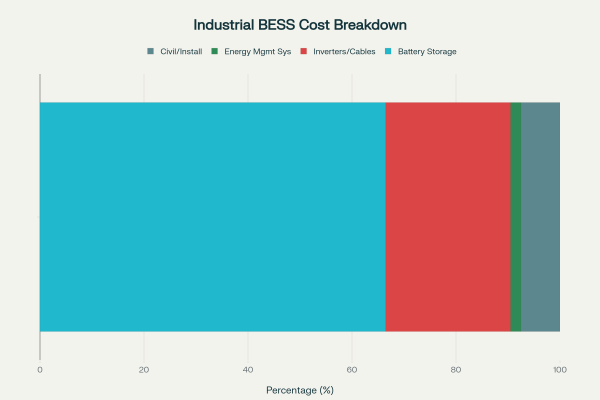
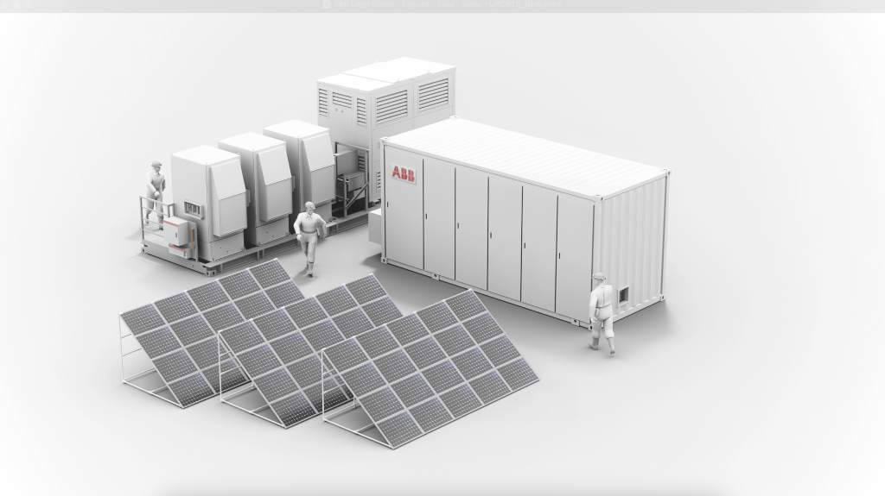
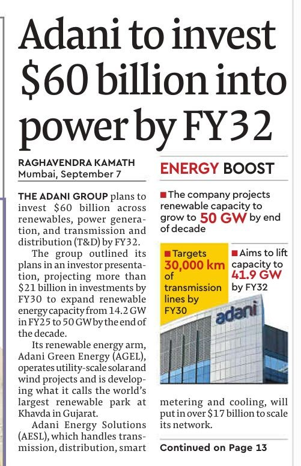
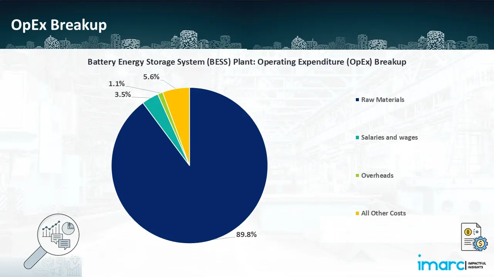
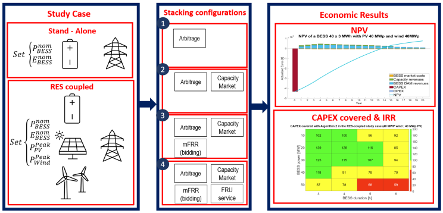
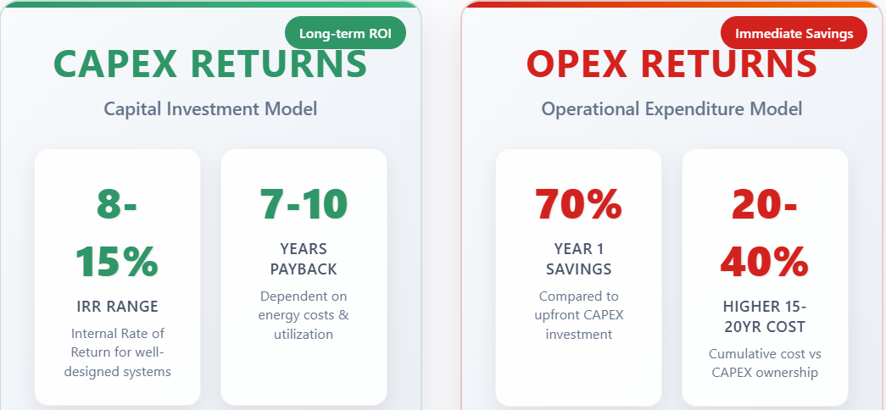
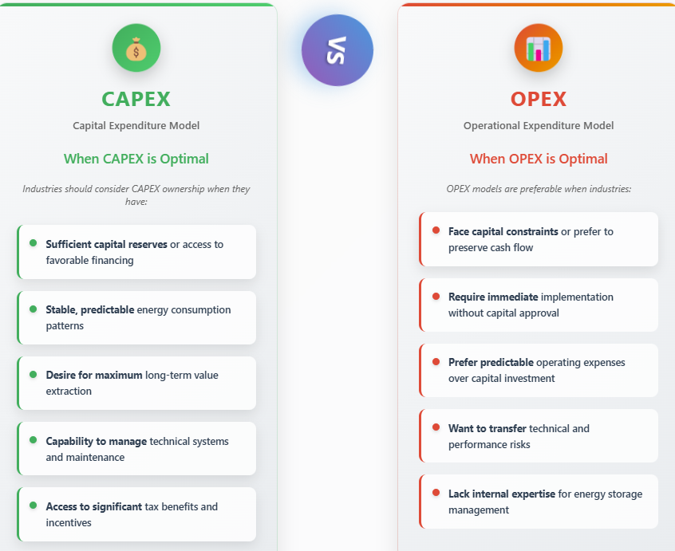
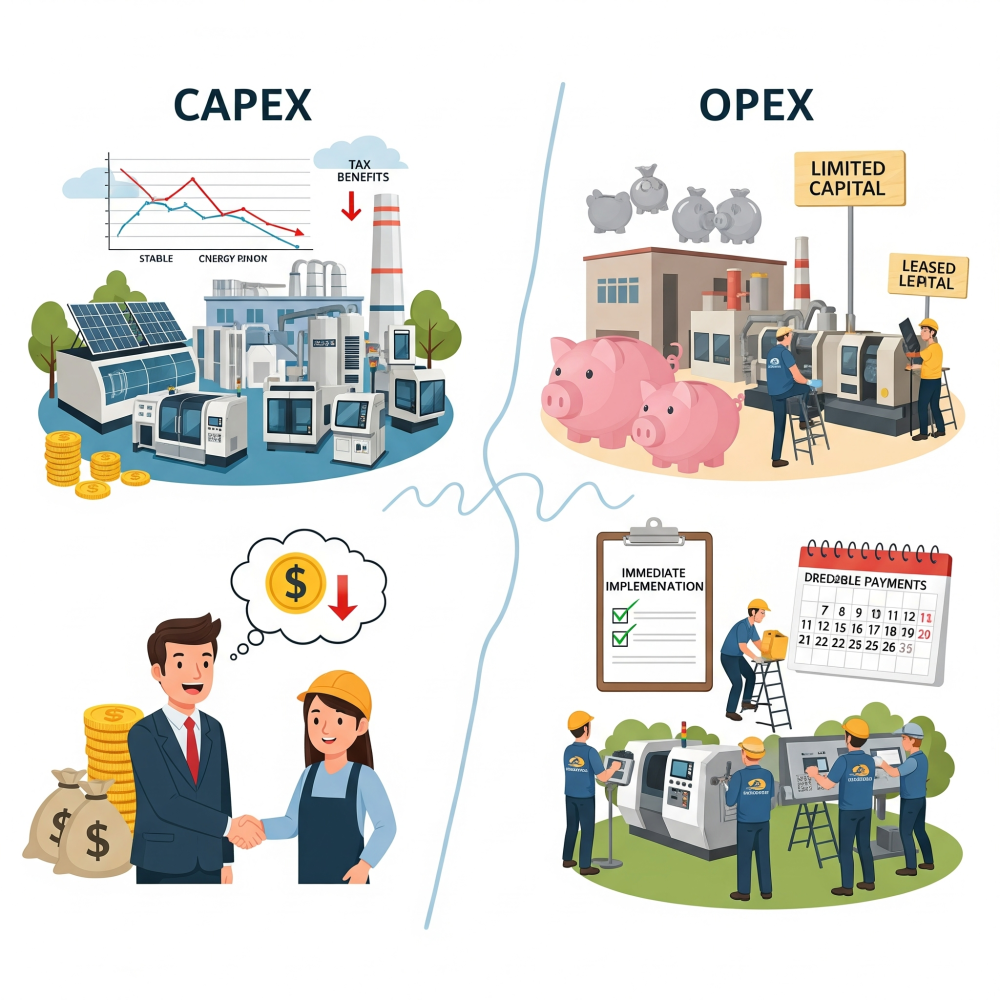

Battery Energy Storage Systems (BESS) represent a transformative technology for industrial enterprises seeking to optimize their energy management, reduce operational costs, and enhance grid resilience. The decision between Capital Expenditure (CAPEX) and Operational Expenditure (OPEX) financing models fundamentally shapes how industries can deploy these systems and realize their benefits. This analysis explores the distinct advantages of each approach and provides strategic guidance for industrial decision-makers.

Understanding BESS Investment Models
CAPEX Model: Direct Ownership Approach
The CAPEX model involves substantial upfront investment where the industrial entity purchases and owns the BESS outright. This approach requires significant initial capital but provides complete ownership and control over the energy storage asset. Under this model, businesses typically invest between $420-$700 per kWh for utility-scale installations, with the total system cost varying based on duration and configuration.
The cost structure of industrial BESS projects reveals that battery storage components represent approximately 64-69% of total capital expenditure, with inverters and power equipment accounting for 20-28%, and civil infrastructure comprising 6-9% of the investment. Energy Management Systems, while critical for optimization, represent only 2% of the total CAPEX.

OPEX Model: Service-Based Approach
The OPEX model, exemplified by Battery Energy Storage Systems-as-a-Service (BESS-as-a-Service), eliminates upfront capital investment by shifting to a subscription-based payment structure. Under this arrangement, third-party providers own, operate, and maintain the BESS while industrial customers pay predictable quarterly or monthly service fees.
ABB pioneering BESS-as-a-Service model demonstrates this approach, enabling companies to deploy battery storage without initial capital outlay while guaranteeing day-one returns. The model is technology-agnostic and includes comprehensive hardware, software, and lifecycle support.

Strategic Benefits of CAPEX Model
Financial Ownership Advantages
- Complete Asset Control and Long-term Value Creation: Direct ownership under the CAPEX model provides industries with complete control over system operations, maintenance schedules, and performance optimization. This control translates into maximum long-term value extraction, as companies can optimize the system specifically for their operational patterns and energy requirements.
- Accelerated Depreciation and Tax Benefits: Industrial BESS investments qualify for significant tax advantages under the CAPEX model, including accelerated depreciation benefits up to 40% in many jurisdictions. These tax incentives can substantially improve the return on investment, with the full tax benefits accruing directly to the asset owner.
- Superior Long-term Economics: Financial analysis reveals that CAPPower - Capex - hashtag#Adani to invest $ 60 Bn by 2032EX investments typically achieve payback within 7-10 years, after which the industrial facility benefits from virtually free energy storage services. Studies demonstrate that well-designed CAPEX BESS projects can generate positive net present values exceeding €200 per kWh over 20-year periods.

Operational and Strategic Advantages
- Peak Demand Management and Cost Optimization: Industrial facilities utilizing CAPEX-owned BESS can reduce peak demand charges by up to 30% annually through strategic energy discharge during high-demand periods. This capability is particularly valuable for manufacturing facilities with heavy machinery that can cause significant demand spikes.
- Energy Arbitrage Opportunities: Owned BESS enable sophisticated energy arbitrage strategies, allowing industries to store energy during low-cost periods and utilize it when electricity prices peak. This flexibility becomes increasingly valuable in volatile energy markets and time-of-use pricing structures.
- Integration with Renewable Energy Systems: CAPEX ownership facilitates seamless integration with on-site renewable generation, maximizing self-consumption and reducing grid dependence by up to 50%. The synergistic benefits of combined solar-plus-storage systems are fully captured by the asset owner.

Strategic Benefits of OPEX Model
Financial Flexibility and Risk Management
- Cash Flow Preservation and Capital Efficiency: The OPEX model preserves precious capital that can be deployed in core business operations rather than energy infrastructure. This approach is particularly advantageous for companies with capital constraints or those prioritizing liquidity for growth investments.
- Predictable Operating Expenses: Monthly or quarterly service fees provide predictable energy storage costs that can be easily incorporated into operational budgets. This predictability eliminates the financial uncertainty associated with large capital investments and potential cost overruns.
- Risk Transfer to Specialized Providers: Under OPEX arrangements, performance risks, technology obsolescence, and maintenance responsibilities transfer to specialized energy service providers. This risk transfer is particularly valuable given the rapid evolution of battery technologies and the complexity of energy storage operations.
Operational and Implementation Advantages
- Immediate Implementation without Capital Barriers: OPEX models enable immediate BESS deployment without waiting for capital budget approvals or financing arrangements. Many companies experience positive returns from day one under service-based models, as energy savings immediately offset service fees.
- Access to Latest Technology and Expertise: Service providers continuously update systems with the latest technologies and maintain specialized expertise in BESS optimization. This ensures industrial customers benefit from technological advances without additional investment.
- Simplified Operations and Maintenance: All operational responsibilities, including monitoring, maintenance, and performance optimization, are handled by the service provider. This arrangement allows industrial companies to focus on their core competencies while benefiting from energy storage capabilities.

Industry-Specific Considerations
- Manufacturing and Heavy Industry: Manufacturing facilities with high energy consumption and significant load variability benefit substantially from both models, though the choice depends on capital availability and risk tolerance. Industries with predictable energy patterns often favor CAPEX ownership for maximum cost optimization, while those with volatile operations may prefer OPEX flexibility.
- Data Centers and Critical Infrastructure: Data centers require exceptional reliability and 24/7 uptime, making both models attractive but for different reasons. CAPEX ownership provides complete control over backup power systems, while OPEX arrangements ensure professional maintenance and monitoring.
- Food Processing and Cold Storage: Industries requiring continuous power for temperature-sensitive operations benefit from OPEX models' guaranteed uptime and professional maintenance, though CAPEX ownership can provide better long-term economics for stable operations.
Financial Performance Analysis
CAPEX Return Profiles
Industrial BESS investments under CAPEX models typically demonstrate strong financial returns, with Internal Rates of Return (IRR) ranging from 8-15% for well-designed systems. The payback period generally falls between 7-10 years, depending on local energy costs and utilization patterns.

OPEX Cost Structures
OPEX arrangements typically result in 70% savings compared to upfront CAPEX investments in the first year, though cumulative costs over 15-20 years may exceed CAPEX ownership by 20-40%. The total cost of ownership must be evaluated against the benefits of preserved capital and transferred risks.
Strategic Decision Framework
When CAPEX is Optimal
Industries should consider CAPEX ownership when they have:
- Sufficient capital reserves or access to favorable financing
- Stable, predictable energy consumption patterns
- Desire for maximum long-term value extraction
- Capability to manage technical systems and maintenance
- Access to significant tax benefits and incentives

When OPEX is Optimal
OPEX models are preferable when industries:
- Face capital constraints or prefer to preserve
- Require immediate implementation without capital approval
- Prefer predictable operating expenses over capital investment
- Want to transfer technical and performance risks
- Lack internal expertise for energy storage management

Emerging Hybrid Models and Future Trends
The energy storage financing landscape is evolving beyond traditional CAPEX/OPEX distinctions. Hybrid models combining elements of both approaches are emerging, including lease-to-own arrangements and revenue-sharing partnerships. Power Purchase Agreements (PPAs) for energy storage services are becoming more sophisticated, offering flexible terms that bridge ownership and service models.

The rapid growth of the global BESS market, projected to reach $194.8 billion by 2033, is driving innovation in financing structures. Energy-as-a-Service (EaaS) models are expanding beyond traditional OPEX arrangements to offer more customized solutions for industrial applications.